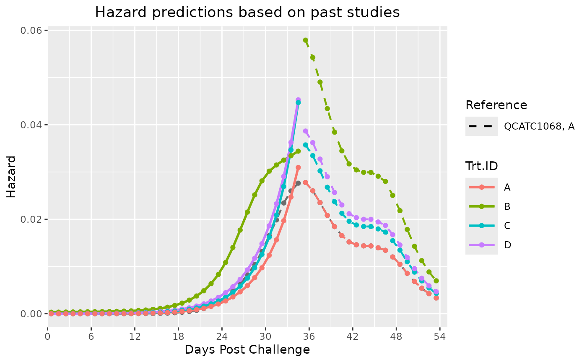

Predict future survival for an ongoing study (supplied into surv_db) based on a reference past study (ref_surv_db). Can consider multiple past studies using the ref_specs argument. Outputs predicted Kaplan-Meier Survival curves for each treatment group and similarly hazard curves.
Usage
Surv_Pred(
surv_db,
ref_surv_db,
ref_specs,
pred_tte,
dailybin = TRUE,
phi = 1.5,
lambda = NULL,
plot_save = TRUE,
plot_prefix = "ONDA_XX",
plot_dim = c(7, 4.3)
)Arguments
- surv_db
A survival dataframe for the ongoing study consisting of at least four columns named TTE, Status, Trt.ID and Tank.ID. For an example, see
surv_db_ex.- ref_surv_db
A survival dataframe for the reference group consisting of at least the four column names mentioned in
surv_dbdocumentation. For example, a dataframe loaded form the Survival Data Library.xlsx.- ref_specs
A dataframe specifying the study, treatment and time (tte) offset for the reference group in
ref_surv_db. Column names: Study, Trt.ID, TTE_offset. A negative TTE_offset means the reference group survival data times are to be subtracted.- pred_tte
A numeric representing the tte at which the survival rate is to be predicted
- dailybin
Whether to use daily (1 TTE interval) time bins in estimating hazard curves. Defaults to TRUE. Further details in
Surv_Plots.- phi
A numeric indicating the count overdispersion parameter to be used in hazard curve estimation. Defaults to 1.5. Further details in
Surv_Plots.- lambda
A numeric indicating the smoothing parameter to be used in hazard curve estimation. Defaults to NULL (data driven estimate). Further details in
Surv_Plots.- plot_save
Whether to save plot outputs in the working directory. Defaults to TRUE.
- plot_prefix
A string specifying the prefix of the filename of the saved plots. Defaults to "ONDA_XX".
- plot_dim
Numeric vector representing the width and height of the plot (in inches), respectively.
Value
Outputs a list containing two ggplot2 objects representing the predicted survival curves and predicted hazard curves. Additionally, the list contains a dataframe with the predicted rates over time and another dataframe containing the predicted rates at the specified pred_tte (or close to it due to limitations in available data from surv_db_ref). The dataframes have at most 7 columns with the following content description for each:
ref_unique | The unique reference group used, based on ref_surv_db and ref_specs. | |
Trt.ID | The treatment group in the ongoing study (surv_db) with rates to be predicted. | |
time | The time to event associated with the hazard rate column (hazard). Round value up (i.e. ceiling()) to obtain time associated with the survival rate (sr). | |
hazard | Hazard rate. | |
hr | Hazard ratio (numerator = Trt.ID, denominator = ref_unique). | |
cumhaz | Cumulative hazard. | |
sr | Survival rate. |
Details
Prediction done by firstly estimating a hazard curve for the reference group using bshazard::bshazard(). The ratio of hazards from the past study to the ongoing is estimated using coxme::coxme(). The reference hazard curve is multiplied by the hazard ratio to obtain the projected hazard curve for the ongoing study. The survival curve is then obtained by exponentiating the negative of the hazard rate.
See also
Link for executed Examples which includes any figure outputs.
Examples
# In the first step, we load the reference database then specify the study and
# treatment to use as reference:
ref_surv_db = surv_db_ex
ref_specs = data.frame(Study = "QCATC1068",
Trt.ID = "A",
TTE_offset = 0)
# Next, we load the ongoing study. Suppose it is mid-way to completion, hence the
# survival data only extends to 35 TTE / DPC and we want to predict to 54. Lets
# create the 35 TTE dataset for this demo:
surv_db = survival::survSplit(data = surv_db_ex[-1,], cut = 35, end = "TTE",
event = "Status", episode = "Eps")
surv_db = surv_db[surv_db$Eps == 1, -c(3, 6)]
tail(surv_db, n = 5)
#> Tank.ID Trt.ID TTE Status
#> 2144 C8 D 35 0
#> 2146 C8 D 35 0
#> 2148 C8 D 35 0
#> 2150 C8 D 35 0
#> 2152 C8 D 35 0
# Now chuck all the created objects into Surv_Pred()!
Surv_Pred(surv_db = surv_db,
ref_surv_db = ref_surv_db,
ref_specs = ref_specs,
pred_tte = 54)
#> $Survival_Plot
#>
#> $Hazard_Plot

#>
#> $Predictions
#> ref_unique Trt.ID time hazard hr cumhaz sr
#> 1 QCATC1068 A A 35.5 0.027780370 1.000000 0.1942286 0.8234697
#> 2 QCATC1068 A A 36.5 0.026018378 1.000000 0.2202470 0.8023206
#> 3 QCATC1068 A A 37.5 0.023520442 1.000000 0.2437674 0.7836699
#> 4 QCATC1068 A A 38.5 0.020824897 1.000000 0.2645923 0.7675188
#> 5 QCATC1068 A A 39.5 0.018433505 1.000000 0.2830258 0.7535003
#> 6 QCATC1068 A A 40.5 0.016535738 1.000000 0.2995615 0.7411431
#> 7 QCATC1068 A A 41.5 0.015208028 1.000000 0.3147696 0.7299571
#> 8 QCATC1068 A A 42.5 0.014602773 1.000000 0.3293723 0.7193751
#> 9 QCATC1068 A A 43.5 0.014360852 1.000000 0.3437332 0.7091181
#> 10 QCATC1068 A A 44.5 0.014349833 1.000000 0.3580830 0.6990150
#> 11 QCATC1068 A A 45.5 0.013958291 1.000000 0.3720413 0.6893258
#> 12 QCATC1068 A A 46.5 0.013434192 1.000000 0.3854755 0.6801272
#> 13 QCATC1068 A A 47.5 0.012017408 1.000000 0.3974929 0.6720027
#> 14 QCATC1068 A A 48.5 0.010463592 1.000000 0.4079565 0.6650078
#> 15 QCATC1068 A A 49.5 0.008554239 1.000000 0.4165107 0.6593434
#> 16 QCATC1068 A A 50.5 0.006853212 1.000000 0.4233640 0.6548403
#> 17 QCATC1068 A A 51.5 0.005394079 1.000000 0.4287580 0.6513175
#> 18 QCATC1068 A A 52.5 0.004244989 1.000000 0.4330030 0.6485585
#> 19 QCATC1068 A A 53.5 0.003340537 1.000000 0.4363436 0.6463956
#> 20 QCATC1068 A B 35.5 0.057916348 2.084794 0.3830815 0.6817573
#> 21 QCATC1068 A B 36.5 0.054242959 2.084794 0.4373245 0.6457619
#> 22 QCATC1068 A B 37.5 0.049035277 2.084794 0.4863597 0.6148606
#> 23 QCATC1068 A B 38.5 0.043415620 2.084794 0.5297754 0.5887372
#> 24 QCATC1068 A B 39.5 0.038430061 2.084794 0.5682054 0.5665412
#> 25 QCATC1068 A B 40.5 0.034473608 2.084794 0.6026790 0.5473433
#> 26 QCATC1068 A B 41.5 0.031705606 2.084794 0.6343846 0.5302617
#> 27 QCATC1068 A B 42.5 0.030443774 2.084794 0.6648284 0.5143618
#> 28 QCATC1068 A B 43.5 0.029939418 2.084794 0.6947678 0.4991903
#> 29 QCATC1068 A B 44.5 0.029916446 2.084794 0.7246843 0.4844775
#> 30 QCATC1068 A B 45.5 0.029100162 2.084794 0.7537844 0.4705823
#> 31 QCATC1068 A B 46.5 0.028007523 2.084794 0.7817920 0.4575853
#> 32 QCATC1068 A B 47.5 0.025053821 2.084794 0.8068458 0.4462635
#> 33 QCATC1068 A B 48.5 0.021814434 2.084794 0.8286602 0.4366339
#> 34 QCATC1068 A B 49.5 0.017833826 2.084794 0.8464940 0.4289161
#> 35 QCATC1068 A B 50.5 0.014287534 2.084794 0.8607816 0.4228315
#> 36 QCATC1068 A B 51.5 0.011245543 2.084794 0.8720271 0.4181031
#> 37 QCATC1068 A B 52.5 0.008849927 2.084794 0.8808771 0.4144193
#> 38 QCATC1068 A B 53.5 0.006964332 2.084794 0.8878414 0.4115432
#> 39 QCATC1068 A C 35.5 0.035733631 1.286291 0.2423479 0.7847831
#> 40 QCATC1068 A C 36.5 0.033467197 1.286291 0.2758151 0.7589533
#> 41 QCATC1068 A C 37.5 0.030254126 1.286291 0.3060692 0.7363357
#> 42 QCATC1068 A C 38.5 0.026786871 1.286291 0.3328561 0.7168734
#> 43 QCATC1068 A C 39.5 0.023710846 1.286291 0.3565669 0.7000756
#> 44 QCATC1068 A C 40.5 0.021269766 1.286291 0.3778367 0.6853424
#> 45 QCATC1068 A C 41.5 0.019561945 1.286291 0.3973986 0.6720661
#> 46 QCATC1068 A C 42.5 0.018783411 1.286291 0.4161820 0.6595602
#> 47 QCATC1068 A C 43.5 0.018472230 1.286291 0.4346543 0.6474885
#> 48 QCATC1068 A C 44.5 0.018458057 1.286291 0.4531123 0.6356467
#> 49 QCATC1068 A C 45.5 0.017954420 1.286291 0.4710667 0.6243359
#> 50 QCATC1068 A C 46.5 0.017280276 1.286291 0.4883470 0.6136399
#> 51 QCATC1068 A C 47.5 0.015457880 1.286291 0.5038049 0.6042273
#> 52 QCATC1068 A C 48.5 0.013459221 1.286291 0.5172641 0.5961493
#> 53 QCATC1068 A C 49.5 0.011003238 1.286291 0.5282674 0.5896257
#> 54 QCATC1068 A C 50.5 0.008815222 1.286291 0.5370826 0.5844509
#> 55 QCATC1068 A C 51.5 0.006938353 1.286291 0.5440209 0.5804098
#> 56 QCATC1068 A C 52.5 0.005460289 1.286291 0.5494812 0.5772492
#> 57 QCATC1068 A C 53.5 0.004296902 1.286291 0.5537781 0.5747741
#> 58 QCATC1068 A D 35.5 0.038673567 1.392119 0.2618171 0.7696518
#> 59 QCATC1068 A D 36.5 0.036220666 1.392119 0.2980378 0.7422733
#> 60 QCATC1068 A D 37.5 0.032743243 1.392119 0.3307810 0.7183625
#> 61 QCATC1068 A D 38.5 0.028990725 1.392119 0.3597718 0.6978356
#> 62 QCATC1068 A D 39.5 0.025661624 1.392119 0.3854334 0.6801558
#> 63 QCATC1068 A D 40.5 0.023019707 1.392119 0.4084531 0.6646777
#> 64 QCATC1068 A D 41.5 0.021171377 1.392119 0.4296245 0.6507534
#> 65 QCATC1068 A D 42.5 0.020328791 1.392119 0.4499533 0.6376580
#> 66 QCATC1068 A D 43.5 0.019992008 1.392119 0.4699453 0.6250365
#> 67 QCATC1068 A D 44.5 0.019976669 1.392119 0.4899219 0.6126742
#> 68 QCATC1068 A D 45.5 0.019431596 1.392119 0.5093535 0.6008839
#> 69 QCATC1068 A D 46.5 0.018701988 1.392119 0.5280555 0.5897506
#> 70 QCATC1068 A D 47.5 0.016729657 1.392119 0.5447852 0.5799664
#> 71 QCATC1068 A D 48.5 0.014566560 1.392119 0.5593517 0.5715795
#> 72 QCATC1068 A D 49.5 0.011908514 1.392119 0.5712602 0.5648132
#> 73 QCATC1068 A D 50.5 0.009540483 1.392119 0.5808007 0.5594502
#> 74 QCATC1068 A D 51.5 0.007509197 1.392119 0.5883099 0.5552649
#> 75 QCATC1068 A D 52.5 0.005909527 1.392119 0.5942194 0.5519933
#> 76 QCATC1068 A D 53.5 0.004650424 1.392119 0.5988699 0.5494322
#>
#> $End_Predictions
#> ref_unique Trt.ID time hr cumhaz sr
#> 19 QCATC1068 A A 53.5 1.000000 0.4363436 0.6463956
#> 191 QCATC1068 A B 53.5 2.084794 0.8878414 0.4115432
#> 192 QCATC1068 A C 53.5 1.286291 0.5537781 0.5747741
#> 193 QCATC1068 A D 53.5 1.392119 0.5988699 0.5494322
#>